Manifesto
Just behind the obvious.
Give me a brief for a pastry shop and I probably won't start with the croissant. I'll go looking for what's standing behind it — the ingredient, the ritual, a Sunday morning — and build from there. The obvious answer is easy to find; I'm more interested in what's just behind it.
That same instinct is what pulls me toward UX/UI right now — where structure has to work for how something feels, not just how it's organized. Making something intuitive without going sterile is the kind of puzzle I can't leave alone.
Day to day: Figma, InDesign, Illustrator, Photoshop — solo or as part of a team, either works.
I started in Industrial Design at La Sapienza in Rome — but somewhere between typography and grid systems, I found the thing I couldn't put down.
Since then I've moved between editorial, advertising, and digital, always chasing that moment where clarity turns into a double take. One of my recent projects was redesigning the Egyptian Academy's magazine — giving an institution with decades of history a look that feels current.

What I do
Layouts are invisible when they work — you just read. I design for rhythm and hierarchy, so the content always leads.
A logo should work in one colour, at any size, and still feel like it means something. I focus on marks that are distinctive without trying too hard.
Visual communication that earns attention without shouting. Simple ideas, executed well — that's what sticks.
Where structure meets feeling. I'm drawn to interfaces that guide you without you noticing — intuitive, not sterile.
Selected works

Contact
Get in touch
I'm looking for a full-time role in a studio or an in-house team. Email is the quickest way to reach me.